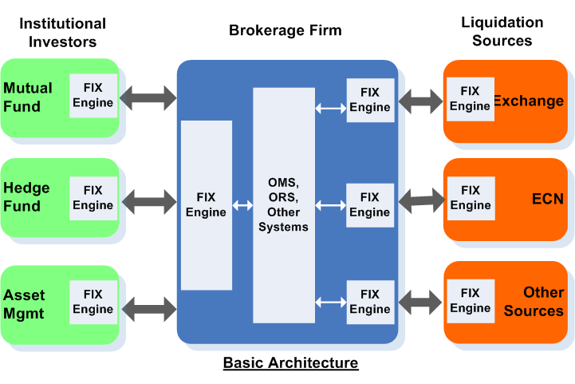
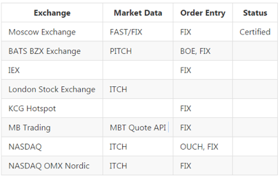
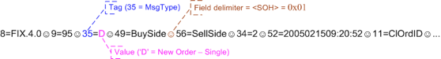
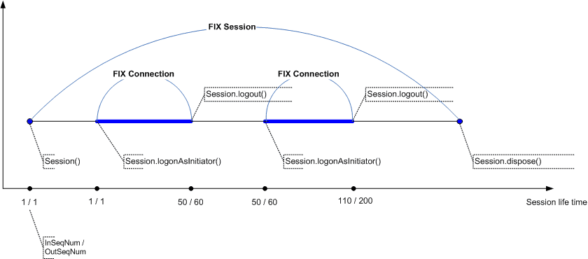

关于FIX¶
大部分的系统都不是凭空诞生， 和老系统、模块有千丝万缕的联系，需要和遗留资产交换信息；通道的方式和通讯的格式需要保持一致性和相兼容是个比较大挑战，这期我们主要谈谈一个古老、有点怪怪、又不失时髦的协议 Financial Information eXchange(FIX)，金融信息交换协议。
字面上理解他仅仅是个交换的协议，也就是个标准和规范，如我们接触比较多的TCP/IP, Http协议一样,笔者认为他更像XML或者Json，但是多了行业术语。实现方式和语言不一而同, FIX Engine 基于此标准来实现客户端和服务器端交互, 可以想象成我们的java web server, 和客户端浏览器的角色。
这个协议（标准）诞生于1992， 大概有25年（2017）之久的历史， 基本没有太大的调整和变动（除去由此演化其它协议如FAST Protocal, NYSE、CME Group在用）。
历史¶
FIX-金融信息交换协议的制定是由多个致力于提升其相互间交易流程效率的金融机构和经纪商于1992年共同发起。这些企业把他们及他们的行业视为一个整体，认为能够从对交易指示，交易指令及交易执行的高效电子数据交换的驱动中获利。FIX由此诞生，一个不受单一实体控制的开放消息标准，一个能够被调整组建适用于任何一个企业的商务需求的协议。
一个经久不衰的协议标准，自然有他闪光地方－－抑或迁移的成本太高，总体来说FIX 协议有这些特点：
- FIX协议是一个**免费**的开放式通信标准
- 不是某个金融机构，或者某个中心服务系统
- “FIX Trading Community™ is the non-profit, industry-driven standards body at the heart of global trading”
- 一个不受单一实体控制的开放消息标准
- 一个能够被调整组建适用于任何一个企业的商务需求的协议
那么在FIX 出现前大家是如何交易的呢？
共同的语境、语法是沟通的基础， 可以参考 巴别塔 为哈没有建成，在20几年前，没有当今的交易体量和众多参与者，这些方式还都行得通；但是通过小本子、电话、传真等传递消息，很容易导致错误、丢失、不一致。为避免混乱及重复使用，于1992年由富达投资和所罗门兄弟为推动股票交易双边通信框架而开发。
- 就商务流程而言，FIX为机构，中间商，以及其他市场参与者提供了一个减少不必要的电话沟通和琐碎的文档传递方法，为面向特定个体传递高质量的信息提供便利。
- FIX为于技术专家提供了一个开放的标准，对他们开发的努力和实践产生了影响，使他们能高效地创建同一个更大范围的参与者之间的联系
- FIX可以为卖主提供一条现成的通往行业的信息存取路径，减少了市场营销的难度，增加了潜在的客户群，充分利用现有资产。
现如今可以说大部分的金融机构都保持对fix 协议的支持， 摘自官网： 1. 275+ 金融服务公司， 1/3 EMEA 2. 2,000+ 代表 3. 1.5 万亿$（交易量） 2013
FIX 细节（部分）¶
FIX已经从最初的买方-到-卖方的证券交易中得到发展。现在被广泛的用于交易市场，及其它市场参与者，除了证券交易还有：
- Fix Income
- List Derivatives
- FX
在一个交易的整个周期
- Pre-Trade
- Post-Trade
- Pre-Settlement
版本也更新了很多：4.0 –>4.1 –> 4.2 –> 4.3 –> 4.4 –> 5.0 ? 6.0
格式 可以说FIX 消息很傻白甜，非常简单就是一个tag=value 的组合。
如果把SOH(0x01) 换成 | 或者逗号(,)，完全可以道出为个excel 格式。
8=FIX.4.2|9=65|35=A|49=SERVER|56=CLIENT|34=177|52=20090107-18:15:16|98=0|108=30|10=062|
消息类型
1. Admin Message 主要用于系统维护，session 连接，登录登出等等
- logon/logout, Heartbeat, Test Request,
- Resend Request, Reject,
- Sequence Reset,Gapfilll
2. Application Message 业务需求的， 我们接触最多的
Application Message可以根据我们trade中不同生命周期提供：
- Pre-Trade
- IOIs, Quotes, News, Email, Market Data, Security Info etc
- Trade
- Single Orders, Basket/List Orders, Multi-leg orders,
- Executions, Order Cancel,
- Cancel/Replace, Status etc
- Post Trade
- Allocations, Settlement Instructions, Positions Mgmt etc
FIX Engine¶
FIX 消息的格式、业务背景都知道了，到实现层面上就是一个FIX引擎负责技术的落地,需要：
- 管理网络链接。
- Session 层的管理，为application message 出入服务，自动处理 Sequence Reset, Resend Request, Test Request, Logon and Logout 等等消息。
- 应用层，处理相关的消息。
- 输出FIX消息，encode。
- 解析输入FIX消息， decode。
- 验证消息格式，tag有无，checksum消息破坏否。
- 消息序列化， 保存到db/mq/file 等。
- 根据FIX状态模型，重启后恢复session状态。
- SSL-based 加密。
- 解压缩等。
Session
Session 一个FIX会话定义为一个在连接双方间的的带有连续序列号的有序消息双向传输流(A FIX session is defined as a bi-directional stream of ordered messages between two parties within a continuous sequence number series)， session是服务器和客户端会话消息交流的上下文， 两种角色：
- Initiator ：发起者，建立通信连路，通过发送初始Logon消息发起会话的参与方。
- Acceptor ：接收方 FIX会话的接收方。负责执行第一层次的认证和通过传输Logon消息的确认正式声明连接请求被接受。
这里注意，一个FIX session 可以在多个物理链接中存在（不是并列链接，一个个序列），双方可以在多次重连中使用同一个session,但是不建议这样做， 在onixs 的fix engine 可以使用 ＃logonAsAcceptor（），＃logonAsInitiator（）实现session 重用。
每个FIX 消息都需要个sequence number（MsgSeqNum <34> ） 标识，这个sequence 需要在一个session中保持唯一性， 序列号在session启动时候初始化为1， 在消息的不断交互中有序增长，发起端和接收端各自维护一个sequence, 互相协调同步，这个由于发送和接受段的消息数量是不一样的， 比如发起端已经发送了100个消息，但是接受可能到200个消息； 反过来这100个消息就是接收方接受的sequence, 200为接受方发送的消息序列。
下面是个最基本的过程：
- 登录
- 下单
- 部分成交
- 取消单子
- 取消成功
- 登出
实现¶
FIX 协议是公开透明通用的， 实现了 FIX Engine的开源、商业解决方案由很多， 开源中比较有名是 QuickfixEngine & Fix 8, 而大部分的开源解决方案都缺乏后续的维护， 缺乏必要监控、高可用性解决方案； 所以我们采取的措施：借鉴开源的解决方案，自己重构重写，剔除不必要的功能， 可以通过其它方法进行补偿，以保持FIX Engine 尽量小简单而美。
最终借鉴 FIXIO ，借助Netty底层通讯解决方案，可以非常迅速快捷实现自己的FIX 引擎，下面只挑几个重点的模块点到下。
网路通讯层可以全部由Netty 处理， SSL 用 stunel 处理，这样大大减少引擎层核心代码的数量和逻辑，易于维护扩展debug.
1. pipeline.addLast("tagDecoder", new DelimiterBasedFrameDecoder(1024, Unpooled.wrappedBuffer(new byte[]{1})));
2. pipeline.addLast("fixMessageDecoder", new FixMessageDecoder());
3. pipeline.addLast("fixMessageEncoder", new FixMessageEncoder());
4. pipeline.addLast("logging", new LoggingHandler("fix", LogLevel.DEBUG));
5. pipeline.addLast("session", ClientSessionHandler(settingsProvider, authenticationProvider, messageSequenceProvider, getFixApplication())); // handle fix session
6. pipeline.addLast("testRequest", new TestRequestHandler()); // process test requests
7. pipeline.addLast(workerGroup, "app", new FixApplication()); // process application events events
基本按照Netty 标准流程下来（这里演示是initiator/client)。
- 按照SOH, 也就是0x1 进行分割
- Decoder 区分哪里是开头（BeginString－8），哪个尾（CheckSum－10），组装成bean
- Encoder 讲发送出去的bean 组装层 SOH 分割风格字符串
- log 落地
- 创建session
- 测试请求， 心跳处理
- 应用程序部分， 在worker group 中处理业务相关逻辑。
Session创建
- ＃channelActive, channel 创建好了：
- 准备logon请求
- 创建session,包含连个sequence(in,out), 其它基本信息， fix版本， sender, target 等信息。
- 讲session 放到ChannelHandlerContext 上。
- ＃channelInactive， 通道关闭发送logout event
- ＃encode, 为out 消息添加 session 中共享的信息，主要是头，事件戳等
- ＃decode，进来的消息简单验证， 比如logon 处理， header, sequence检查，主要逻辑还是application 中处理。
- ＃exceptionCaught， 异常处理
更多的协议如雨后春笋般涌现出来， 唯独fix 协议的标准和实现方式20多年来没有很多的变更， 大规模的使用也代表他有存在的价值和理由。 对于其它协议有很多可以借鉴的学习的地方。
前十篇，基本的理论、业务、技术都有涉及，后续篇幅，将更多技术方面的东西，比如redis, Kafka, ignite,分布式，高可用性方面的内容。